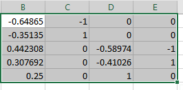
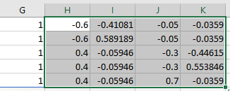

| D1 | D2 | D3 | D4 | |
|---|---|---|---|---|
| nothing | 0 | 0 | 0 | 0 |
| t-shirt | 1 | 0 | 0 | 0 |
| chalk ball | 0 | 1 | 0 | 0 |
| chalk powder | 0 | 0 | 1 | 0 |
| liquid chalk | 0 | 0 | 0 | 1 |
GLM IV+ Advanced ANOVA
Caspar J. van Lissa
2023-08-09
ANOVA
What is ANOVA
ANalysis Of VAriance
- One-way ANOVA has one categorical predictor and a continuous outcome
- Provides an omnibus (overall) test of differences between group means
- \(H_0: \mu_1 = \mu_2 \ldots = \mu_k\)
- All k groups have the same mean
- \(H_1\): not H0, any means differ
Example Data
Most climbers use “chalk” (magnesium carbonate) to dry their hands
- Climbing chalk is hygroscopic (absorbs moisture)
- But does it actually improve climbing performance?
Li, Margetts, & Fowler (2010):
[Chalk] dries the skin, decreasing its compliance and hence reducing the coefficient of friction. Secondly, [chalk] creates a slippery granular layer. […] alternative methods for drying the fingers are preferable.
Our fake data:
- Dependent variable: hangtime until faillure in seconds
- Independent variable: Method of drying hands
- Nothing, t-shirt, chalk powder, chalk ball, liquid chalk (alcohol suspension)
Dummy Coding Scheme
- Pick one reference category
- Create \(k-1\) dummy variables that indicate membership of the other groups
Regression with Dummies
You can represent a categorical variable with \(k\) categories in a regression model using \(k-1\) dummy variables:
\(\hat{Y}_i = a + b_1D_{1i}+ b_2D_{2i}+ b_3D_{3i}+ b_4D_{4i}\)
- \(a\): Intercept, mean value of the reference category “nothing”
- \(b_1\): Difference between Nothing and t-shirt
- \(b_2\): Difference between Nothing and chalk ball
- Et cetera
Example
| B | SE | t | p | |
|---|---|---|---|---|
| (Intercept) | 23.13 | 1.93 | 11.99 | 0.00 |
| Dt-shirt | 10.52 | 3.26 | 3.23 | 0.00 |
| Dchalk ball | 1.16 | 2.76 | 0.42 | 0.67 |
| Dchalk powder | -0.49 | 3.05 | -0.16 | 0.87 |
| Dliquid chalk | -0.28 | 3.26 | -0.08 | 0.93 |

Alterntive Coding Schemes
ANOVA specification
Alternatively, you can estimate \(k\) group means using \(k\) dummy variables
| D1 | D2 | D3 | D4 | D5 | |
|---|---|---|---|---|---|
| nothing | 1 | 0 | 0 | 0 | 0 |
| t-shirt | 0 | 1 | 0 | 0 | 0 |
| chalk ball | 0 | 0 | 1 | 0 | 0 |
| chalk powder | 0 | 0 | 0 | 1 | 0 |
| liquid chalk | 0 | 0 | 0 | 0 | 1 |
Regression formula:
\(\hat{Y} = b_1*D_1 + b_2*D_2 + b_3*D_3+b_4*D_4 + b_5*D_5\)
- \(b_1\): Mean of the nothing group
- \(b_2\): Mean of the t-shirt group
- \(b_3\): Mean of the chalk ball group
- Et cetera
ANOVA vs Regression specification
- Both preceding models are mathematically identical
- We just replace the intercept with one additional dummy
- Same number of parameters
- Advantage: We get a standard error for each group mean
- We can test each group mean against hypothesized values
- The default t-test tests \(H_0: \beta = 0\)
- Use the standard errors to test other hypotheses
Example Results ANOVA Specification
| Mean | SE | t | p | |
|---|---|---|---|---|
| conditionnothing | 23.13 | 1.93 | 11.99 | 0 |
| conditiont-shirt | 33.66 | 2.62 | 12.83 | 0 |
| conditionchalk ball | 24.30 | 1.97 | 12.32 | 0 |
| conditionchalk powder | 22.64 | 2.36 | 9.58 | 0 |
| conditionliquid chalk | 22.86 | 2.62 | 8.72 | 0 |
Example Custom Test
Does hang time in the T-shirt condition exceed 30 seconds? \(H_0: \beta < 30\)
\[ t = \frac{33.66-30}{2.62} = 1.40 \] \(t_{crit}(df=84) = 1.66\), \(t_{test} < t_{crit}\) so cannot reject \(H_0\)
| Mean | SE | t | p | |
|---|---|---|---|---|
| conditionnothing | 23.13 | 1.93 | 11.99 | 0 |
| conditiont-shirt | 33.66 | 2.62 | 12.83 | 0 |
| conditionchalk ball | 24.30 | 1.97 | 12.32 | 0 |
| conditionchalk powder | 22.64 | 2.36 | 9.58 | 0 |
| conditionliquid chalk | 22.86 | 2.62 | 8.72 | 0 |
More Coding Schemes
Dummy coding, \(k-1\) dummies + intercept
- Gives us one group mean + difference tests with all other group means
Dummy coding, \(k\) dummies
- Gives us all group means
Other coding schemes that represent exactly the same information, but give us different information:
Deviation coding: Compare each condition to the grand mean
Contrast coding: Compare multiple group means against each other
- One control condition vs two different experimental conditions
- Effect of two positive emotions vs three negative emotions
- Instead of talking about “dummies”, we’ll talk about “indicator variables”
- A dummy is an indicator variable that can take only 0 or 1 values
General Rules Coding Schemes
For all coding schemes:
- The possible values of each indicator must sum to 0
- Each group should be uniquely identified by a particular combination of the indicator variables
- E.g., this is why we cannot have both an intercept and a dummy for one group; the dummy and intercept are redundant
- Sometimes you have to account for relative group size
Effects Coding
Effects Coding: Comparing all groups to the grand mean.
- The reference category does not score 0 on all indicator variables, but receives a negative value
- In a balanced design (equal group sizes), this value is -1
- Codes for each indicator must sum to 0
- In a balanced design, the coding scheme for effects coding is:
| E1 | E2 | E3 | E4 | |
|---|---|---|---|---|
| nothing | -1 | -1 | -1 | -1 |
| t-shirt | 1 | 0 | 0 | 0 |
| chalk ball | 0 | 1 | 0 | 0 |
| chalk powder | 0 | 0 | 1 | 0 |
| liquid chalk | 0 | 0 | 0 | 1 |
Effects Coding Output
Effects coding gives us the following information:
- The grand mean for the dependent vaeriable
- The difference between each group, except the reference category, compared to the grand mean
Effects Coding Unequal Groups
We rarely have balanced designs.
- In the general way to construct effect codes, weights assigned for the reference category differ for each indicator
- They are computed as:
\(-1 * n_{\text{this category}} / n_{\text{reference category}}\)
Given group sizes a = 44, b = 87, c = 7:
| E1 | E2 | |
|---|---|---|
| a | 1 | 0 |
| b | 0 | 1 |
| c | \(\frac{-7}{44}\) | \(\frac{-87}{44}\) |
Understanding Equal Groups
Note that when group sizes are equal, we get -1 for the reference category:
Given group sizes a = 40, b = 40, c = 40:
| E1 | E2 | |
|---|---|---|
| a | 1 | 0 |
| b | 0 | 1 |
| c | \(\frac{-40}{40} = -1\) | \(\frac{-40}{40}= -1\) |
Example Effect Coding
We have the following sample sizes:
| nothing | t-shirt | chalk ball | chalk powder | liquid chalk | |
|---|---|---|---|---|---|
| Freq | 24 | 13 | 23 | 16 | 13 |
Which leads to this coding scheme:
| E1 | E2 | E3 | E4 | |
|---|---|---|---|---|
| liquid chalk | 1 | 0 | 0 | 0 |
| chalk powder | 0 | 1 | 0 | 0 |
| chalk ball | 0 | 0 | 1 | 0 |
| t-shirt | 0 | 0 | 0 | 1 |
| nothing | -13/24 | -16/24 | -23/24 | -13/24 |
Example Results Effects Coding
| Mean | SE | t | p | |
|---|---|---|---|---|
| (Intercept) | 24.84 | 1.00 | 24.79 | 0.00 |
| E_t-shirt | 8.81 | 2.42 | 3.64 | 0.00 |
| E_chalk ball | -0.55 | 1.70 | -0.32 | 0.75 |
| E_chalk powder | -2.20 | 2.14 | -1.03 | 0.31 |
| E_liquid chalk | -1.98 | 2.42 | -0.82 | 0.42 |
Contrast Coding
Another coding scheme is to compare groups of means
- E.g., is there a difference between doing nothing or using a t-shirt versus the three chalk types?
- \(H_0: \mu_{\text{nothing, shirt}} = \mu_{\text{powder, ball, liquid chalk}}\)
- And is there a difference between liquid and dry forms of chalk?
- \(H_0: \mu_{\text{liquid chalk}} = \mu_{\text{powder, ball chalk}}\)
- Complete the matrix to meet the rules of coding schemes
This is a very advanced technique!
Step 1: Plan Contrasts
Plan your contrasts. This scheme meets all requirements, except accounting for group size:
| nothingshirtVchalk | nothingVshirt | dryVliquid | ballVpowder | |
|---|---|---|---|---|
| nothing | -1.5 | -1 | 0.0 | 0 |
| t-shirt | -1.5 | 1 | 0.0 | 0 |
| chalk ball | 1.0 | 0 | -0.5 | -1 |
| chalk powder | 1.0 | 0 | -0.5 | 1 |
| liquid chalk | 1.0 | 0 | 1.0 | 0 |
Step 2: Account for Group Size
If you do not account for group size, you will be comparing means of means:
\(H_0: \frac{\mu_{nothing}+\mu_{shirt}}{2} = \frac{\mu_{powder}+\mu_{ball}+\mu_{liquid}}{3}\)
Instead of the mean of multiple conditions:
\(H_0: \mu_{\text{nothing, shirt}} = \mu_{\text{powder, ball, liquid chalk}}\)
If group sizes are equal, these approaches are identical and you can skip
Step 2: How To
Sample sizes:
| nothing | t-shirt | chalk ball | chalk powder | liquid chalk | |
|---|---|---|---|---|---|
| Freq | 24 | 13 | 23 | 16 | 13 |
We then get the contrast values:
| nothingshirtVchalk | nothingVshirt | dryVliquid | ballVpowder | |
|---|---|---|---|---|
| nothing | -24/(24+13) | -1 | 0 | 0 |
| t-shirt | -13/(24+13) | 1 | 0 | 0 |
| chalk ball | 23/(23+16+13) | 0 | -23/(23+16) | -1 |
| chalk powder | 16/(23+16+13) | 0 | -16/(23+16) | 1 |
| liquid chalk | 13/(23+16+13) | 0 | 1 | 0 |
Step 3a: Do Matrix Algebra
Planned contrasts require you to invert the matrix of contrasts
Write your planned contrasts in Excel/Google Sheets:
Step 3b: Add intercept
Add an intercept, consisting of 1/\(k\) for each group:
- We have 5 groups, so our intercept is \(1/5 = 0.2\)
Step 3c: Copy-paste Formula
- Click an Empty cell
- Paste
=MINVERSE(TRANSPOSE( - Select your contrast matrix
- Finish the formula by typing closing brackets
))
Step 3d: Copy-Paste Result
Copy-paste the inverted matrix
These are the values you will use for your indicators!
Example Results Contrast Coding
| Mean | SE | t | p | |
|---|---|---|---|---|
| (Intercept) | 25.32 | 1.04 | 24.38 | 0.00 |
| nothingshirtVchalk | -3.40 | 2.03 | -1.67 | 0.10 |
| nothingVshirt | 10.52 | 3.26 | 3.23 | 0.00 |
| dryVliquid | -0.76 | 3.03 | -0.25 | 0.80 |
| ballVpowder | -1.66 | 3.08 | -0.54 | 0.59 |
‘Post-Hoc’ Tests
You can also compare all group means to each other
With \(k\) groups, we can make \(\frac{k(k−1)}{2}\) comparisons
If \(k = 5\), we have \((5*4)/2=10\) comparisons.
- Historically, this is called a “post-hoc” test (=“after the fact”)
- “post-hoc” implies that this is not a hypothesized test, like a planned contrast might be
- You have to be very mindful of data dredging (false positive findings)
- This can only be done via the ANOVA interface in SPSS
Experiment-wise Type I error
Adjusting for Multiple Comparisons
- The significance level \(\alpha\) is the probability of committing a Type I error
- We typically use \(\alpha = .05\): 5% probabability of drawing a false positive conclusion
- When we conduct many tests, we run this risk each time
Experiment-wise Type I error
Experiment-wise Type I error \(\alpha_{ew}\): The total risk of committing a Type I error (false positive conclusion) accross multiple (m) tests.
\[ \alpha_{ew} = 1 - (1-\alpha)^m \]
So for 3 tests: $_{ew} = 1 - (1-.05)^10 = .40
40% chance of at least one false positive conclusion may be more than we want
Bonferroni Correction
Bonferroni proposed a simple correction:
\(\alpha = \alpha_{EW}/m\)
- \(\alpha_{EW}\) is the desired experiment-wise Type I error rate (e.g., .05)
- \(m\) is the number of tests
- This correction is quite conservative
- There’s always a trade off: fewer false positive conclusions means it is harder to detect true effects
Another Solution
Aside from choosing a sensible \(\alpha\) level, conducting fewer tests and specifying specific hypotheses before conducting your study also helps control Type I error.
See this chapter on “preregistration” of study plans and planned tests:
<https://lakens.github.io/statistical_inferences/13-prereg.html